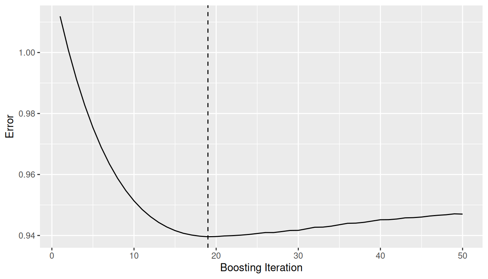
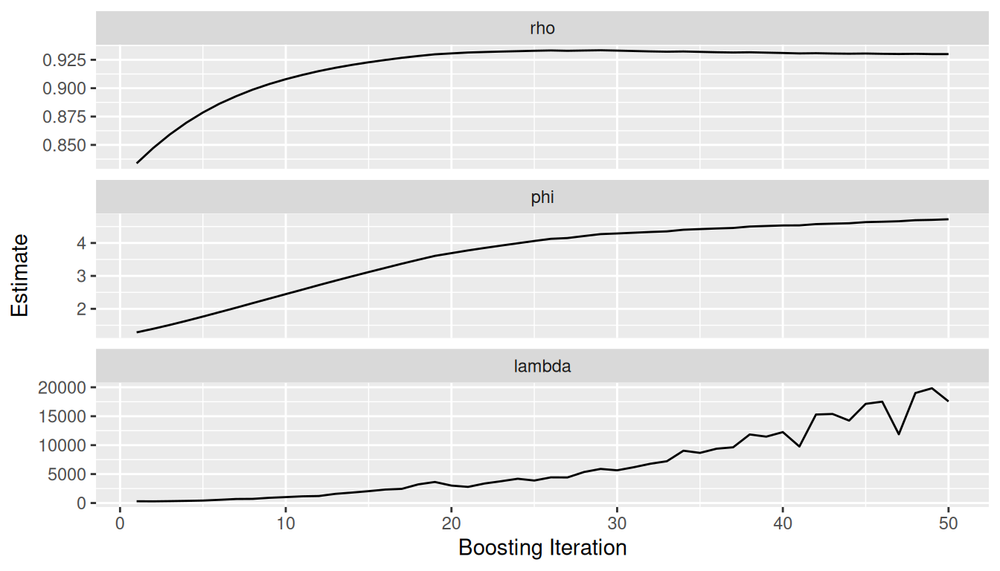
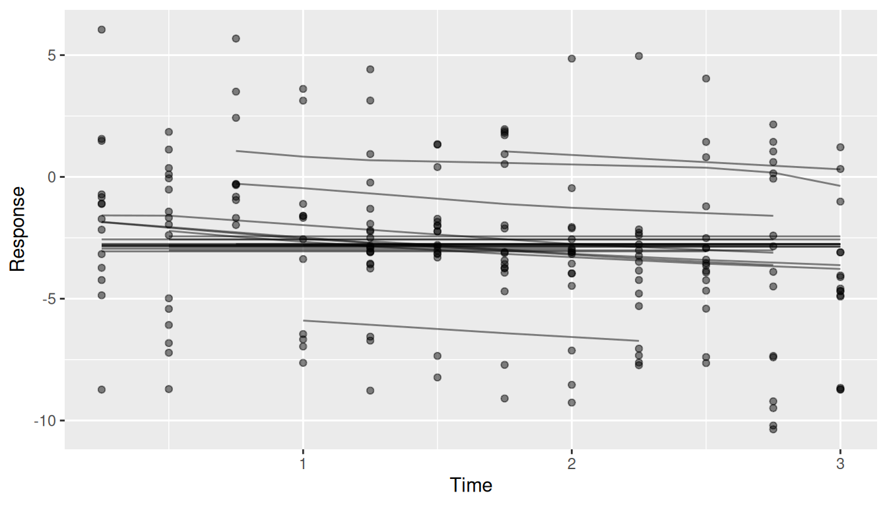
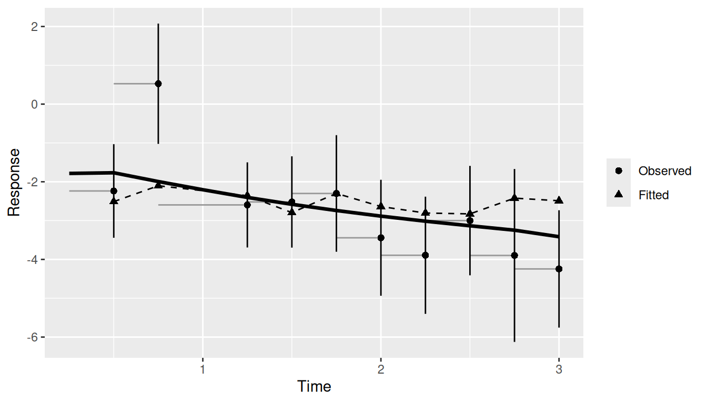
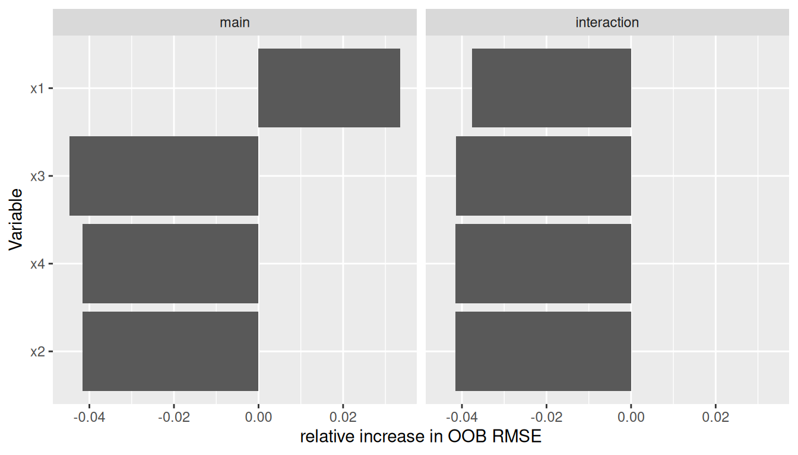
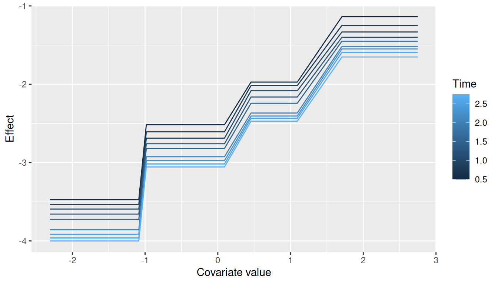

library(ggBoostedTrees)
library(ggplot2)
set.seed(7)
sim <- boostmtree::simLong(n = 25, n.time = 4, model = 1)$data.list
fit <- boostmtree::boostmtree(
x = sim$features, tm = sim$time, id = sim$id, y = sim$y,
M = 50, cv.flag = TRUE, verbose = FALSE,
control = boostmtree::boostmtree.control(seed = 7)
)What is this package for?
If you have grown a random forest with randomForestSRC, you have probably reached for ggRandomForests to look at it: an error curve to see whether the forest has enough trees, an importance plot, a partial dependence plot or two. ggBoostedTrees gives you the same set of figures for a boosted tree model of a longitudinal outcome, fit with boostmtree.
Boosting adds a few questions a forest never raises. A boosted model is grown one small step at a time, so you need to know where to stop it. boostmtree also estimates a within-subject correlation and a smoothing penalty as it goes, and those should settle before boosting stops. And because the response is measured repeatedly on the same subjects, the figure you most want is the one that puts a subject’s fitted curve next to their observed values.
This vignette is for the biostatistician who already knows R and ggplot2 and has a boostmtree fit (or is about to make one). It walks one small simulated example from the fit to every figure the package draws, in the order you would look at them.
How is a figure built?
Every figure comes from two steps. An extractor, one of the gg_boost_*() functions, pulls a tidy data frame out of the fitted model. Then autoplot() (or its alias plot()) draws that data frame and hands you back a bare ggplot.
The split is deliberate. The data frame has a documented column contract, so you can read the numbers behind a figure, test them, or reshape them before anything is drawn. And because the renderer reads only that data frame, never the fit, a second modelling backend needs new extractor methods and nothing else. That is how BoostMLR fits came to be supported.
A small fit
We simulate 25 subjects with up to four visits each, using simLong() from boostmtree. Model 1 builds the response from x1, x3 and x4, plus an interaction between time and x2, so we know what a sensible fit ought to find. Fifty boosting iterations is enough to make the point and fits in about a second.
cv.flag = TRUE matters here. boostmtree records the error path and the cross-validated optimal iteration (m.opt) only when cross-validation ran. A fit grown without it has no error path to draw, and gg_boost_error() will tell you so rather than draw something misleading.
Did it converge?
The error path is the first thing worth looking at, so a fitted model goes straight to it:
autoplot(fit)
The dashed line marks the optimal iteration. Error that falls and then flattens well before the last iteration says M was large enough. If the curve is still falling at the right edge, grow more iterations.
The shortcut hides the first step. Written out, it is the extractor and then the renderer, and the extractor’s result is an ordinary data frame:
gg_dta <- gg_boost_error(fit)
head(gg_dta, 3)
#> iteration value response optimal
#> 1 1 1.0118738 y FALSE
#> 2 2 1.0008788 y FALSE
#> 3 3 0.9912097 y FALSEThe optimal column flags the row for m.opt. Everything else in the package follows this pattern.
Did the variance structure settle?
boostmtree re-estimates three parameters as it boosts: rho (the within-subject correlation), phi (the variance component) and lambda (the P-spline smoothing parameter for the time interaction). gg_boost_path() tracks all three by iteration:
autoplot(gg_boost_path(fit))
Each parameter gets its own panel on a free y scale, because the three can sit orders of magnitude apart. What you want to see is each path levelling off. A parameter still drifting at the last iteration means the variance model had not caught up with the mean model when boosting stopped.
Does it track individual subjects?
This is the figure longitudinal boosting exists for. A model can match the population mean well and still miss most individual subjects. gg_boost_trajectory() puts each subject’s fitted curve (lines) over their observed values (points):
autoplot(gg_boost_trajectory(fit))
With a few hundred subjects the plot turns to spaghetti. autoplot() draws at most n_max subjects (100 by default) and scales the transparency to the number drawn. Use subset to name the subjects you want to look at.
Does it match the data over follow-up?
The trajectory plot shows subjects one at a time. The calibration figure summarizes all of them at once: observations are grouped into time bins with roughly equal counts, and each bin shows the mean observed value with a 95% interval next to the mean fitted value at the same observations.
pred <- predict(fit, x = fit$x)
autoplot(gg_boost_calibration(fit, pred = pred))
Passing pred adds the cohort’s mean predicted curve (the solid line). The interval treats observations as independent, which repeated measurements are not, so it is too narrow. Read it as a visual guide, not a test. The extracted data frame also carries n_subject per bin, which is where to look when a late bin rests on a handful of subjects.
Which covariates matter, and how?
Variable importance comes from boostmtree itself. gg_boost_vimp() takes the output of vimp.boostmtree() and splits importance into the covariate’s main effect and its interaction with time:
set.seed(7)
vimp <- boostmtree::vimp.boostmtree(fit)
autoplot(gg_boost_vimp(vimp))
Don’t read too much into importance from 25 subjects. The values are noisy at this size. A value below zero means permuting that covariate did not make the error worse, so the model is not leaning on it. Here only the main effect of x1 clears zero, and the simulation did give x1 the largest coefficient.
To see the shape of an effect rather than its size, ask boostmtree for a partial effect and hand the result to gg_boost_effect():
pp <- boostmtree::partial.plot(
fit, x.var.names = "x1", output = "data", verbose = FALSE
)
autoplot(gg_boost_effect(pp))
Each curve is the partial effect of x1 at one time point, coloured by time. The response rises with x1, in steps, because the base learners are trees. The vertical gap between curves is the time trend. Curves that stay roughly parallel, as these do, say the effect of x1 does not change much with time; a covariate with a strong time interaction draws curves that change slope from one time to the next. gg_boost_effect() accepts marginal.plot() output in the same way.
Finishing a figure
autoplot() returns a bare ggplot, so you finish it with + the way you would any other:
Swap in the hvtiPlotR theme here for a figure in house style.
What about BoostMLR?
All six figures also accept a BoostMLR fit. Partial effects go through boostmlr_partial(), since BoostMLR’s own partial-effect output arrives without covariate or response names. The support is partial on purpose: marginal effects and joint importance are not available for BoostMLR, and the extractors stop with an error rather than guess.
Where to go next
The function reference is arranged in the same order as this vignette’s workflow:
-
Extract holds the
gg_boost_*()extractors andboostmlr_partial(), each documenting the columns of the data frame it returns. -
Render holds the
autoplot()method for each extracted class, with the arguments that control the drawing (subsetandn_maxfor trajectories, for example). -
Shortcut holds
autoplot.boostmtree(), the jump from a fit to its error path.
For random forests, the same idiom is in ggRandomForests.